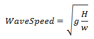

Overhead cables can be sagged using a stopwatch to time impulse waves.
The traveling wave speed of a catenary varies with tension.

where:
To time the traveling wave speed, an impulse is triggered at a span end. The wave will travel to the opposite end of the span and reflect back toward the original impulse point. The wave will continue reflecting at span ends until the wave energy is so small that it cannot be detected.
Errors related to stopwatch starting/stopping can be reduced if a high return wave is selected for timing.